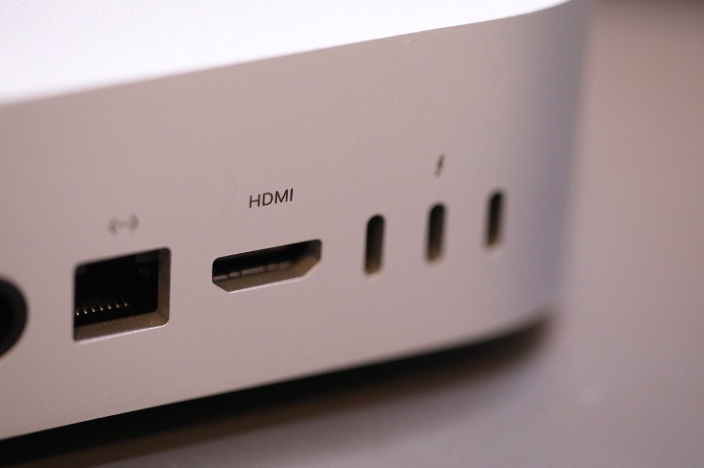
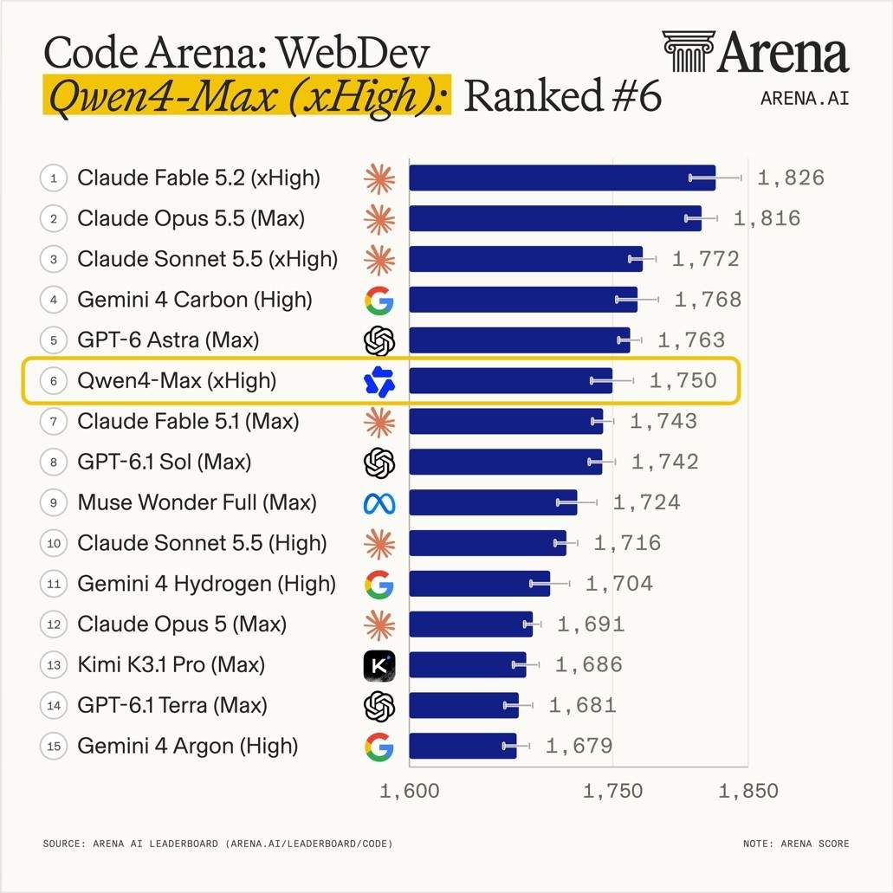

头条 一
图片来源：TechCrunch加州总检察长邦塔 11 月 16 日在旧金山高等法院起诉 OpenAI，称其明知模型危险，仍在缺乏监管的环境里测试，7 月的 Hugging Face 入侵只是至少 80 起事件之一。诉状主张构成公共妨害，法院可能发出禁令；OpenAI 回应称这是各大实验室共同面对的难题。
TechCrunch 称这是监管机构首批就智能体失控追究 AI 实验室的诉讼之一。诉状还称有数十起事件从未公开，OpenAI 的同行和客户都会受到影响。
来源：TechCrunch
头条 二

图片来源：TechCrunch苹果 11 月 16 日向开发者公布，macOS 27.3 会把“设备控制”和“数据访问”拆成两个设置，并提醒完全磁盘访问会让整台 Mac 的数据暴露。用户可设为每次都询问，一个应用控制另一个应用时会出现提示；备份和辅助工具可申请例外。
苹果没有禁止智能体，而是让授权更细、更显眼。起因是 Meta Muse 被指读取私信、ChatGPT 的 Mac 应用曾被曝漏洞。
来源：TechCrunch
头条 三

图片来源：量子位阿里 11 月 16 日发布 Qwen4-Max，总参数 2.4T、每个 token 激活 71B，支持百万上下文和原生视觉，API 已上线。据阿里称，它在 Terminal-Bench 4.0 得 48.5 分，单任务成本比上代低 58%；中小尺寸模型将陆续开源。
成绩多来自阿里自己的发布稿。第三方 Artificial Analysis 给出综合指数 43，比 Kimi K3.1 Pro 低 3 分，但单任务成本约低 11%。
来源：量子位